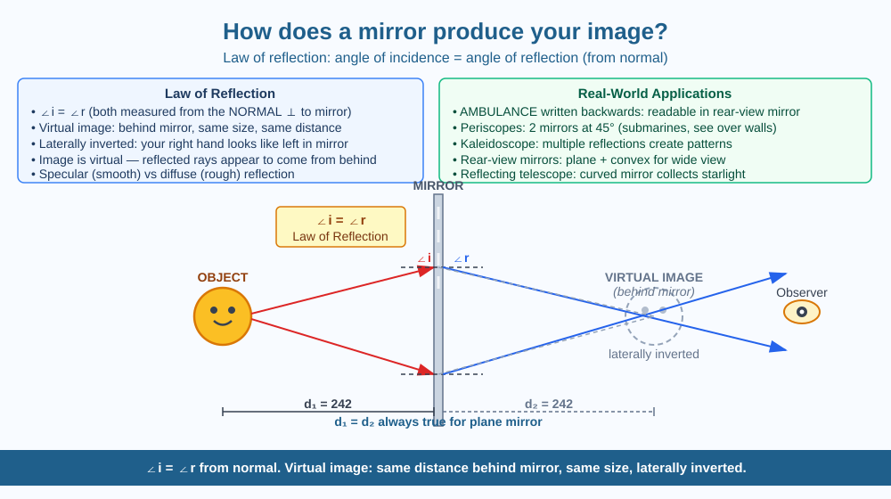

By the end of this lesson, you should be able to state the law of reflection, explain how a plane mirror forms a virtual image, and predict what happens to a reflection when the mirror surface becomes rough.
Stand in front of a mirror — you see yourself, but your reflection has your left hand where your right hand should be. The mirror seems to have flipped you left-to-right, yet it has not flipped you upside down. Why does the mirror invert left and right but not up and down? And how does the mirror "remember" your face to show it to you?
A mirror does not store images. What it does is redirect light following a simple, precise rule.
The law of reflection. Every surface reflects light to some degree. A mirror has an extremely smooth, polished metal surface (usually aluminium or silver deposited behind glass). When a ray of light hits a smooth surface, it bounces off at the exact same angle at which it arrived, measured from a line called the normal (an imaginary line perpendicular to the surface at the point where light hits).
Law of reflection: Angle of incidence = Angle of reflection
Both angles are measured from the normal, not from the surface itself.
How the image forms. Your face is constantly reflecting light in all directions. Some of those light rays travel toward the mirror. Each ray hits the mirror and bounces back at an equal angle. When these reflected rays reach your eye, your brain traces them backward as straight lines — as if they had come directly from a point behind the mirror. The place where those imaginary straight-line extensions meet behind the mirror is the virtual image of your face.
Properties of a plane mirror image: - Same size as the object - Same distance behind the mirror as the object is in front - Virtual — the image cannot be projected onto a screen; it only appears to be behind the mirror - Laterally inverted — left and right appear swapped
Why left-right but not up-down? The mirror does not actually flip left and right. It flips front and back — your nose, which points toward the mirror in reality, now appears to point away from you in the reflection. When you then mentally "turn the image to face you," left and right appear swapped. Up and down are not affected because the swap is front-back, not vertical.
Diffuse vs specular reflection. A rough surface like a wall also reflects light, but each part of the rough surface faces a slightly different direction. Rays scatter in many different directions (diffuse reflection) — no image forms. Only a very smooth surface produces specular reflection — all rays bouncing in organised, predictable directions — which is what creates a clear image.
Think of the mirror as a perfect signboard: whatever direction light arrives from, it sends it back on a precisely mirrored path. Your eye receives those return rays, and your brain — which assumes light always travels in straight lines — traces the rays backward to find the "source." That imaginary source is the virtual image.
The included SVG shows a plane mirror as a vertical line in the centre of the canvas:

When you look at yourself in a mirror, you are looking at a virtual image — one that cannot be caught on a piece of paper. A camera, however, captures a real image — one that is projected onto the camera sensor (or old film) by a lens.
A concave mirror (curved inward like a bowl, the kind used in shaving/makeup mirrors) can form a real image — actual light rays meeting at a point in front of the mirror — or a magnified virtual image, depending on the object distance. This is why a concave shaving mirror makes your face look larger.
Predict: If you held a piece of white paper in front of a concave shaving mirror at just the right distance, would you expect to see an image of a bright lamp behind you projected onto the paper? Explain why or why not, using the difference between real and virtual images.
What is the mechanism by which a flat mirror produces a reflection of your face?
Why is understanding how light reflects off mirrors more useful than knowing mirrors show your image?
If you covered a mirror with a rough, uneven coating, what would you predict would happen to the reflection?
Without a mirror, can you tell what the back of your own head looks like? Design a system using two plane mirrors and explain the path light must take from the back of your head to reach your eyes. Draw the ray diagram with arrows and label the angles of incidence and reflection at each mirror.
The mirrors we call "one-way mirrors" (used in interrogation rooms and spy thrillers) are not actually mirrors that work in only one direction — the law of reflection is the same on both sides. They are glass with a very thin silver coating (a half-mirror) that reflects about half the light and transmits the other half. In a dimly lit observation room and a brightly lit interrogation room, the difference in brightness makes the brighter side see a reflection rather than through — but if both rooms were equally bright, it would be transparent in both directions.
Plane mirror: angle of incidence = angle of reflection. Virtual image forms same distance behind the mirror — same size, not projectable, and laterally inverted front-to-back.